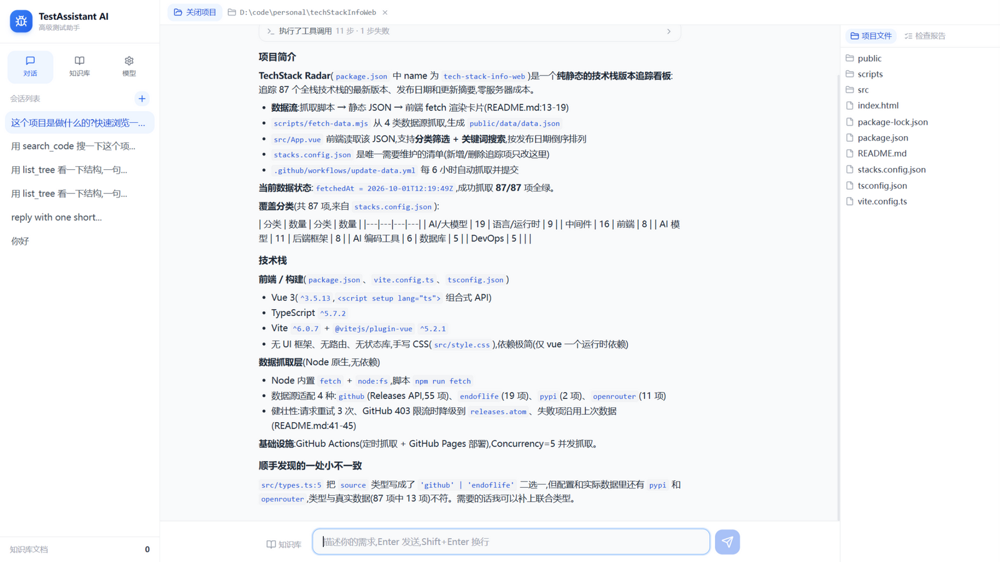
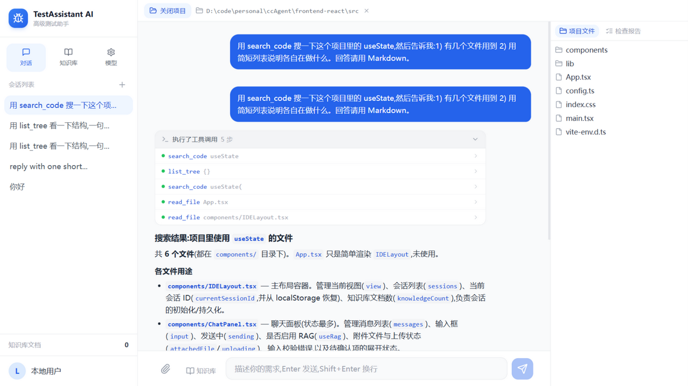
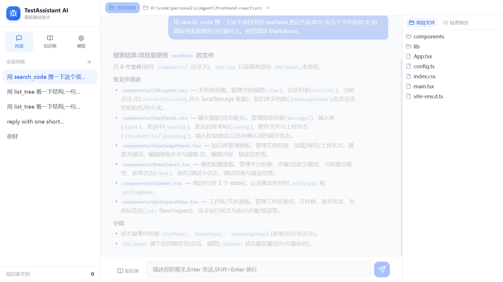

TestAssistant AI 像打开文件夹一样打开你的项目:代码分析、Bug 定位、规范检查、自由提问, 全部由智能体现场读代码作答——每一条结论都有文件与行号作为证据。

不是聊天窗口套壳,而是一套围绕"项目工作区"构建的完整能力。
像打开文件夹一样打开本地项目,文件树、文件内容、目录结构一目了然;一切问答与检查都以当前工作区为根。
智能体通过列目录、读文件、正则搜索、执行命令等工具现场收集事实再回答,过程透明可见,拒绝凭空猜测。
规则引擎零 token 秒扫硬编码密钥、危险函数、调试残留;AI 语义审查逐文件深入,产出分级问题清单与健康分报告。
上传团队编码规范、业务文档,检索增强让回答贴合你的约定;规范文档还会作为检查标准注入审查流程。
技术栈、目录约定、你的偏好——智能体会主动记住重要事实,新开会话也延续上下文,越用越懂你的项目。
DeepSeek、通义千问、Kimi、智谱或任何 OpenAI 兼容接口,填入 Key 即用;API Key 加密存储,不落明文。

智能体的每一步工具调用都折叠展示在一行摘要里,想深究时逐条展开,查看它到底读了哪个文件、搜了什么关键词。

左侧会话与知识库,中间是对话主战场,右侧是项目文件树与检查报告——所有信息一屏尽览,不需要在窗口间来回切换。
不需要终端、不需要装 Python、不需要记任何命令。
点击 打开项目,在系统目录框里选中你的代码文件夹——就像在资源管理器里打开它一样。
直接提问:这个项目是做什么的? 找出潜在的性能问题,或一键运行全项目规范检查。
分级问题清单 + 健康分报告落盘保存;智能体发现的重要事实会写进项目记忆,下次打开依然记得。
TestAssistant AI 运行在你的电脑上,服务只绑定本机回环地址;项目代码、检查报告、项目记忆、知识库 全部保存在本机用户目录,卸载重装都不丢失。唯一出网的请求,是你配置的 LLM API 调用——用什么模型、 发送什么内容,始终由你决定。API Key 使用 AES-256-GCM 加密落盘。